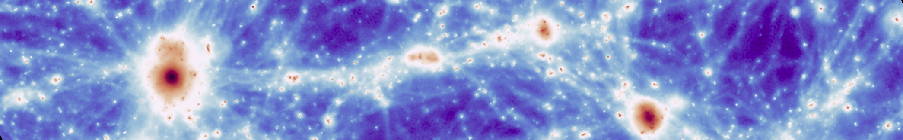

The AIDA-TNG project
galaxy formation in alternative dark matter models
We introduce the AIDA-TNG project - "alternative dark matter in the TNG universe", a suite of cosmological magnetohydrodynamic simulations that simultaneously model galaxy formation and different variations of the underlying dark matter model. We consider the standard cold dark matter model and five variations, including three warm dark matter scenarios and two self-interacting models with constant or velocity-dependent cross-section. In each model, we simulate two cosmological boxes of 51.7 and 110.7 Mpc on a side, corresponding to TNG50 and TNG100, and combine the variations in the physics of dark matter with the fiducial IllustrisTNG galaxy formation model. The AIDA-TNG runs are thus ideal for studying the simultaneous effect of baryons and alternative dark matter models on observable properties of galaxies and large-scale structures. Each of the three boxes is created in multiple variations of dark matter scenarios (see below), as well as with and without baryonic physics.
